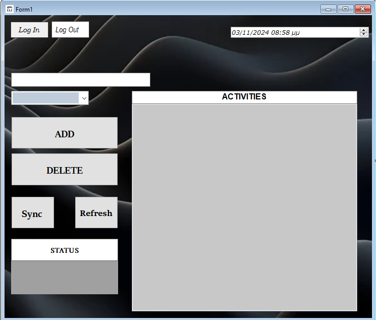

My Projects
Network Manager

This project is a Network Manager application that allows the user to monitor and manage network and VPN connections on their computer.
The application is written in C# and uses the Windows Forms library for the graphical user interface (GUI).
Following is a detailed description of the functions and features of the application:
- Real-time status display of the network and VPN.
- Enable/disable network or VPN with button presses.
- Refresh available networks or connect to a specific VPN through the GUI.
- Log file for recording all actions and changes.
Network Details: The project can display details about the network status, such as encryption type (e.g., WPA2), speed (download/upload), and number of connected devices.
Automatic Network Refresh: The application can automatically refresh the list of available networks every few seconds.
Monitoring Features:
- Connected Network Name: Displays the name of the connected network.
- Connection Duration Monitoring: Shows duration of network and VPN connections.
- Connection Status Updates: Labels display the current status with color-coded feedback.
- Automatic Notifications: On-screen notifications for network or VPN status changes.
Basic Functions:
- Enable/Disable Network: Toggle network status with visual feedback.
- Connect/Disconnect VPN: Button control with visual notifications for VPN status.
- Available Networks: View all Wi-Fi networks and refresh the list.
- Ping and Speed Monitoring: Shows ping and speed status.
- Automatic Network Switching: Monitors network availability and switches if disconnected.
- Network Reconnect: Attempts to reconnect if the network connection is lost.
Organizer (Cloud Connected)
Project Description: ToDo List with Cloud Sync
This project is a task management application (ToDo List) that allows users to create, manage, and track their tasks. The application offers cloud synchronization features, supporting multiple users with secure Firebase authentication. Users can log in, sync their tasks to the cloud, and receive notifications for upcoming deadlines.
Application Features
Task Management:
- Users can create, delete, and edit tasks.
- Tasks include fields like Task Name, Date and Time, and Priority (High, Medium, Low).
- Tasks are stored locally and can be synced with the cloud.
Cloud Sync (Firebase Firestore):
- Sync all tasks to the cloud, allowing access from different devices.
- A Sync button for synchronizing and a Refresh button for refreshing tasks from the cloud.
Multi-User and Authentication (Firebase Authentication):
- Users can log in with their email and password, ensuring they only see their tasks.
- Login and Logout buttons are available for user management.
- Each user has a separate account and data.
Deadline Notifications:
- Notifications are displayed when a task is approaching its deadline (10 minutes before).
- Notifications appear as messages and sounds (Beep), alerting users to complete their tasks.
Log File for Action Tracking:
- The application logs all main actions (e.g., adding, deleting tasks, syncing, logging in) to a log file for tracking user actions.
Technical Features
Platform:
- Windows Forms Application (.NET Framework) in C#.
Tools and Libraries:
- FirebaseAdmin and Google.Apis.Auth for Firebase integration (Authentication and Firestore).
- System.IO for file management and log tracking.
Requirements:
- .NET Framework 4.6.1 or newer.
- Firebase project to support Firestore and Authentication.
- Service account key file (JSON) from Firebase Console for Firestore integration.
Button Functions:
- Sync Button: Synchronize local tasks with Firestore.
- Login Button: Log in the user through Firebase Authentication.
- Logout Button: Log out the user from Firebase.
- Refresh Button: Refresh task list from Firestore without syncing.
How to Use the Application
Starting the Application:
- Open the application and log in with your email and password (if you have an account).
- If you don’t have an account, you can create one through Firebase Console and link it to the application.
Adding and Managing Tasks:
- Use the Task Name field to name a task and select the priority.
- Add the task with the Add button and save changes locally or to the cloud with the Sync button.
Syncing Tasks:
- Press the Sync button to sync tasks with the cloud or the Refresh button to view updates from other devices.
Notifications:
- If a task is nearing its deadline, you will receive a notification 10 minutes before with a message and sound (Beep).
- To turn off notifications, simply disable the
notificationTimer.
Logging Out:
- When finished, you can log out with the Logout button to secure your data.
Use Cases
This application can be used for personal task management, with access from multiple devices and data security through Firebase. It is suitable for users who need an easy-to-use notification and task tracking system with cloud synchronization.
Chat Moderator

This project is a real-time chat moderation tool that allows moderators to monitor and manage chat messages.
Project Overview:
The Chat Moderator project is a real-time chat moderation tool designed to manage a chat server. It consists of a server in C++ and a client UI in C# with the following functionalities:
Functionalities:
- Real-Time Chat Monitoring:
- The C++ server simulates a real-time chat environment by continuously generating user messages, some of which may contain prohibited language or spam.
- The C# client (Chat Moderator UI) connects to the server and displays these messages in a ListBox (
lstChat) for the moderator to monitor.
- Message Display and Interaction:
- Messages received from the server are displayed in the
lstChatbox. - The moderator can click on specific messages to select a user for further action (ban or timeout).
- Messages received from the server are displayed in the
- Moderation Controls:
- Ban Button: The moderator can select a user’s message and click "BAN" to prevent the user from further participation. This action is sent to the server, which updates its list of banned users, filtering out any future messages from them.
- Timeout Button: The moderator can use the "TIMEOUT" button to temporarily restrict a user. This action is sent to the server, where the user is placed in a timeout status, limiting them from posting for a defined period.
- Moderator and Banned/Timeout Display:
- Moderators ListBox: Displays a list of active moderators managing the chat.
- Banned/Timeout ListBox: Shows users who have been banned or are currently in timeout. This box updates as actions are taken and provides moderators with a clear view of the enforcement status.
- Background Functionality:
- The connection to the server runs on a background thread, continuously listening for new messages while allowing the moderator to take actions seamlessly.
- The project is designed to handle exceptions gracefully, ensuring the UI remains responsive even if the server experiences connectivity issues.
- Design and Usability:
- The UI elements are designed for clarity and ease of use, with distinctive buttons for actions and a well-structured chat display.
- The ListBox components are organized to make it easy for moderators to view chat messages, manage moderators, and track banned or timed-out users.
Purpose:
This project is intended to simulate a real-time chat moderation tool that handles both the technical and interface aspects of managing a live chat environment. It demonstrates how to use C++ for server management alongside C# for a polished, interactive client interface.